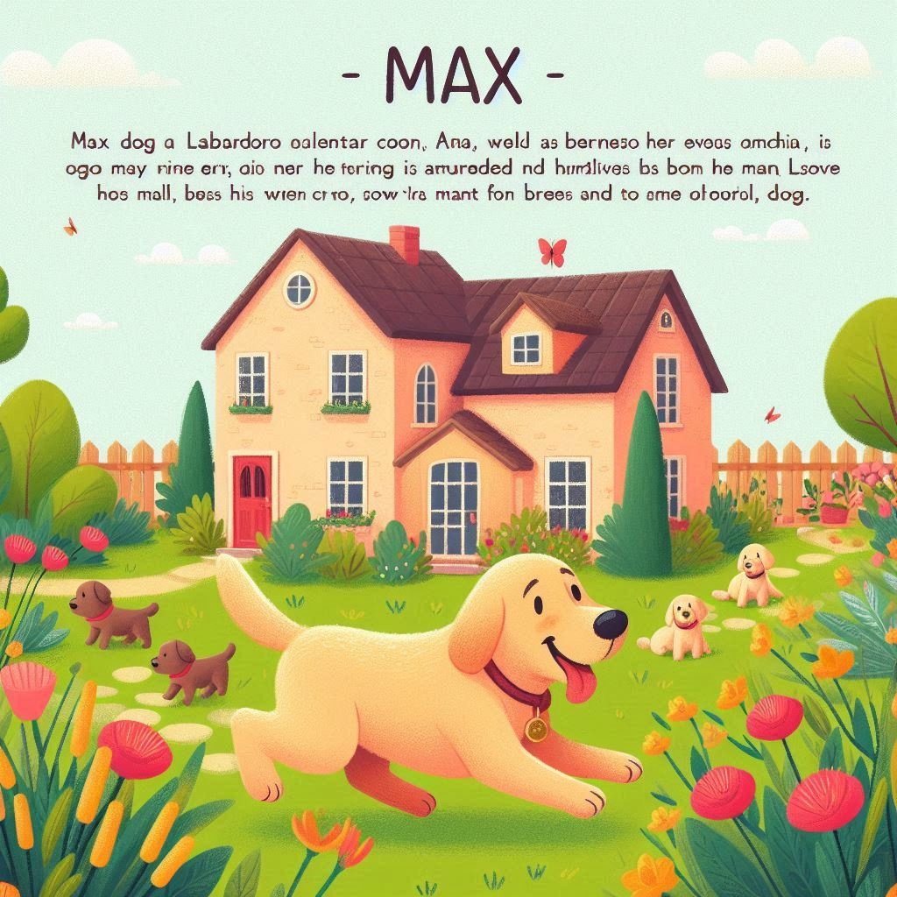

<html lang="en"></html>
<head>
     <link rel="stylesheet" href="style.css">

    <meta charset="UTF-8">
    <meta name="viewport" content="width=device-width, initial-scale=1.0">

    <link rel="preconnect" href="https://fonts.googleapis.com">
<link rel="preconnect" href="https://fonts.gstatic.com" crossorigin>
<link href="https://fonts.googleapis.com/css2?family=Sofadi+One&display=swap" rel="stylesheet">
    
   
    <title> A Aventura de Max</title>
</head>

<body>
    <main>
      
         <div>
            <div class="passo ativo" id="passo-0">
            
            <p>Max era um cachorro da raça labrador, muito brincalhão e curioso. Ele vivia com sua dona, Ana, em uma casa com um grande quintal cheio de árvores e flores.</p>
            <button class="btn-proximo" data-proximo="1">Ir embora</button>
            <button class="btn-proximo" data-proximo="2">Começar</button>
        </div>
     
            <div class="passo" id="passo-1">
            
            <p> Max decide ignorar a bola e continua brincando no quintal.</p>
            <button class="btn-proximo" data-proximo="3"> Max se diverte no quintal e se cansa, voltando para casa.</button>
            <button class="btn-proximo" data-proximo="4"> Max decide ignorar a bola e continua brincando no quintal.</button>
        </div>

        <div class="passo" id="passo-2">
            <p>Max decidiu que precisava de um plano para sair.</p>
            <button class="btn-proximo" data-proximo="5">Max decide pedir ajuda a Ana para sair.</button>
            <button class="btn-proximo" data-proximo="6">Max encontra um buraco grande o suficiente para passar.</button>
        </div>

        <div class="passo" id="passo-3">
            
            <p>Fim</p>
            <button class="btn-proximo" data-proximo="7">retornar</button>
        </div>
    
        <div class="passo" id="passo-4">
            <p>Max se diverte no quintal e se cansa, voltando para casa. Fim</p>
        </div>
    
        <div class="passo" id="passo-5">
            <p>Ana ajuda Max a sair e eles vão juntos para o parque.</p>
            <button class="btn-proximo" data-proximo="7">No parque</button>
        </div>
    
        <div class="passo" id="passo-6">
            <p>Max sai e corre em direção à bola no parque.</p>
            <button class="btn-proximo" data-proximo="8">Max continua correndo em direção à bola.</button>
        </div>
    
        <div class="passo" id="passo-7">
            <p>Max e Ana correm para o parque e é notado por algumas crianças</p>
            <button class="btn-proximo" data-proximo="9">Brincar com as crinças</button>
            <button class="btn-proximo" data-proximo="10">Sair correndo atrás da bola</button>
        </div>
    
        <div class="passo" id="passo-8">
            <p>Max decide se aventurar e correr para o parque.</p>
            <button class="btn-proximo" data-proximo="7">Continuar</button>
        </div>
    
        <div class="passo" id="passo-9">
            <p>Brincam tanto que Max esqueceu da bolinha.</p>
            <button class="btn-proximo" data-proximo="11">Voltar</button>
        </div>
    
        <div class="passo" id="passo-10">
            <p> Ana fica preocupada.</p>
            <button class="btn-proximo" data-proximo="12">Procurar Max</button>
        </div>
    
        <div class="passo" id="passo-11">
            <p> Depois da procura. Ana encontra Max no parque e sorri.</p>
        </div>
    
        <div class="passo" id="passo-12">
            <p>As crianças ajudam a achar Max</p>
            <button class="btn-proximo" data-proximo="11">continuar</button>
        </div>

        <script src="script.js"></script>
    </main>
    
</body>
</html>